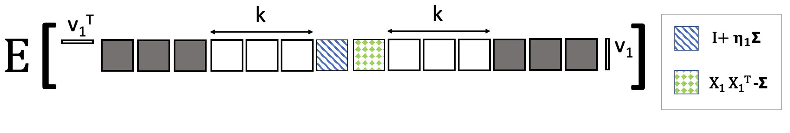
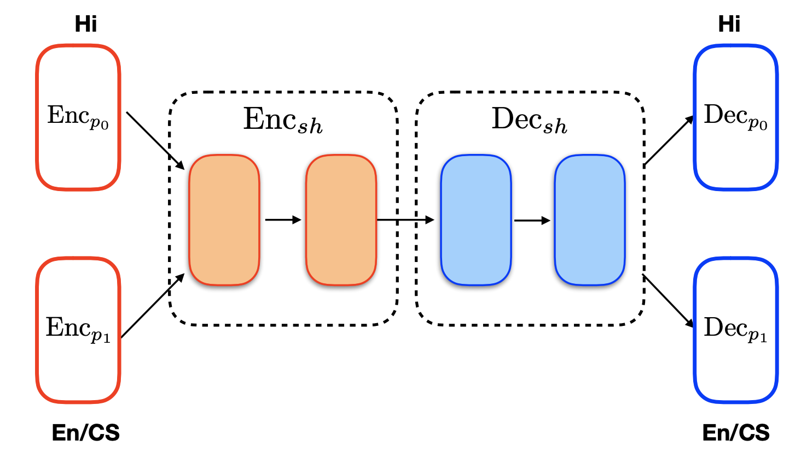
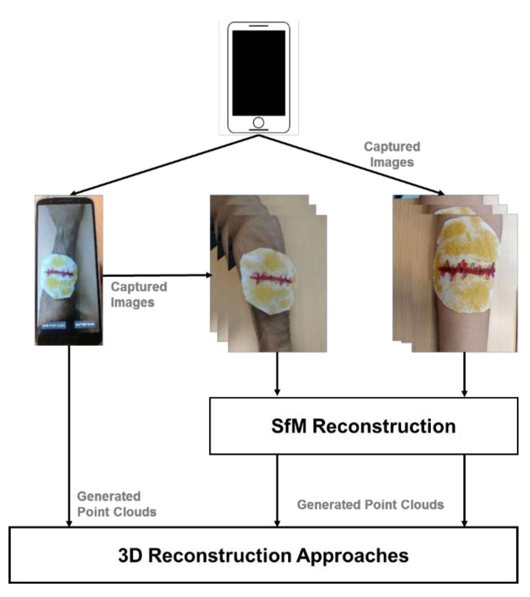
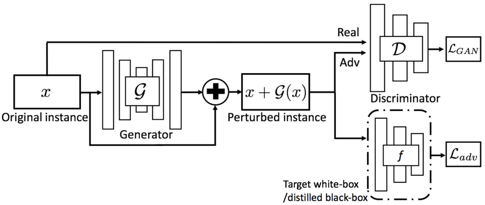
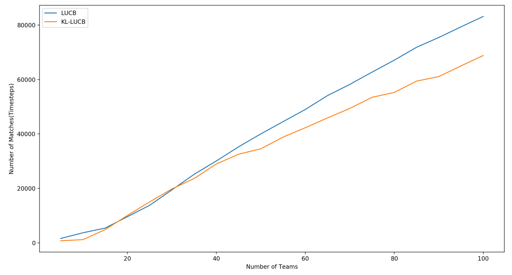
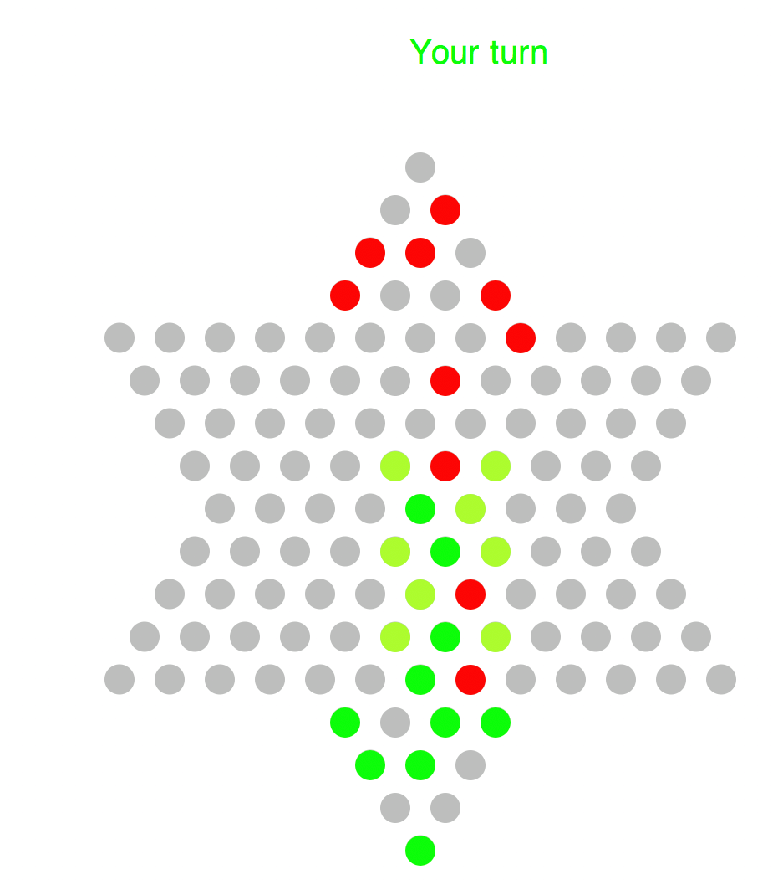

|
Syamantak Kumar
I am a second year PhD student studying computer science at UT Austin advised by Prof. Purnamrita Sarkar and Prof. Kevin Tian . Broadly, my research interests lie at the intersection of statistics and machine learning.
I am interested in designing machine learning algorithms with provable guarantees of convergence and correctness. I also want to work on quantifying the computational and statistical aspects of state-of-the-art deep learning methods.
I deeply enjoy studying the applications of high-dimensional statistics, optimization and probability theory to real-world problems.
Previously, I was an undergraduate student at the Computer Science and Engineering Department, IIT Bombay .
I previously worked with Prof. Suyash Awate on Medical Imaging and with Prof. Preethi Jyothi on NLP for Code-switching at IIT Bombay.
I have also worked with Prof. Thomas Deserno on Medical Informatics and Imaging, back in 2018.
Email /
CV /
Github /
Google Scholar /
LinkedIn
|
|
|
Updates
- [Sept 2023] Our paper "Streaming PCA for Markovian Data" accepted as a Spotlight (Top ~3%) at NeurIPS 2023.
- [Aug 2023] Started PhD CS at UT Austin.
- [Aug 2021] Started MS CS at UT Austin.
- [Jan 2021] Our paper "From Machine Translation to Code-Switching : Generating High-Quality Code-Switched Text" accepted in ACL-IJCNLP 2021.
- [July 2020] Joined Google, Bangalore as a software engineer in the Google Maps team.
- [Jun 2019] Working at Google, Bangalore as a software engineering intern.
- [Feb 2019] Our paper "A comparison of open source libraries ready for 3D reconstruction of wounds" got accepted in SPIE Medical Imaging 2019.
|
|

|
Streaming PCA for Markovian Data
Syamantak Kumar,
Purnamrita Sarkar,
NeurIPS, 2023
Paper link
We propose a nearly-optimal streaming algorithm for performing PCA under Markovian dependence among the samples.
|
|

|
From Machine Translation to Code-Switching : Generating High-Quality Code-Switched Text
Ishan Tarunesh,
Syamantak Kumar,
Preethi Jyothi
ACL-IJCNLP 2021
Paper link
In this work, we adapt a state-of-the-art neural machine translation model to generate Hindi-English code-switched sentences starting from monolingual Hindi sentences.
|
|

|
A comparison of open source libraries ready for 3D reconstruction of wounds
Syamantak Kumar*,
Dhruv Jaglan*,
Nagarajan Ganapathy,
Thomas Deserno
SPIE Medical Imaging Conference, 2019
Paper link
We propose an android application for real-time three dimensional scanning of surface wounds to aid effective diagnosis of wounds remotely and present a comparative study of open-source libraries available for performing this task.
|
* : Equal Contribution
For a complete list of projects, please refer to my CV.
|
|
Generative Model for User Contributions
I worked at Google, Bangalore with the Maps team on a model for predicting the correctness of an edit made by a user on Maps. This model is used to ensure that data displayed on Google Maps is true to the accuracy it claims.
|
|

|
Adversarial Examples for Keyword Spotting
code /
report
Used Generative Adversarial Networks (GANs) to generate adversarial examples for keyword spotting systems, improving their robustness.
|
|

|
Tournament Ranking given pairwise preferences
code /
report
Designed an algorithm for fully-sequential sampling in a Probably-Approximately-Correct (PAC) setting to determine top-K players in a tournament, given pariwise preferences
|
|

|
Chinese Checkers AI
code
Implemented an AI for playing Chinese Checkers using the Minimax algorithm with alpha-beta pruning. (Implemented in Racket)
|
Undergraduate Teaching Assistant, PH107, Quantum Physics and its Applications, Fall 2017
|
Graduate Teaching Assistant, CS361S, Network Security and Privacy, Fall 2021
|
Graduate Teaching Assistant, EE 461P, Data Science Principles, Spring 2022
|
|
Stolen this awesome template from Jon Barron. Thanks a lot for sharing!
|
|